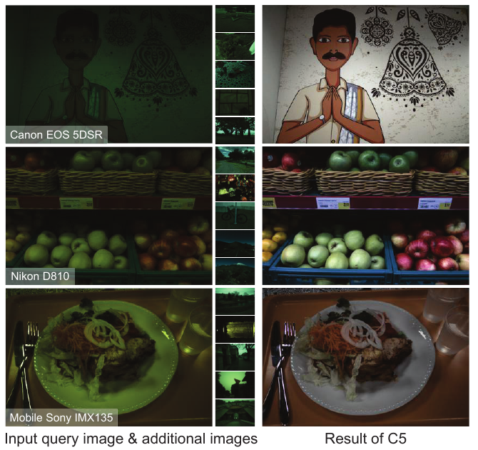
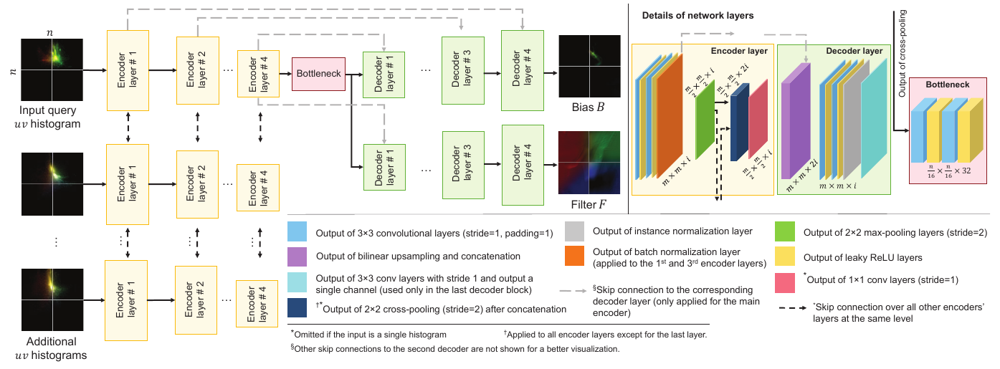
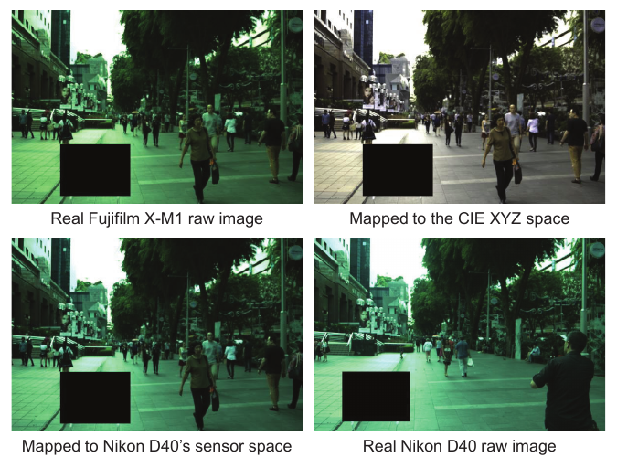
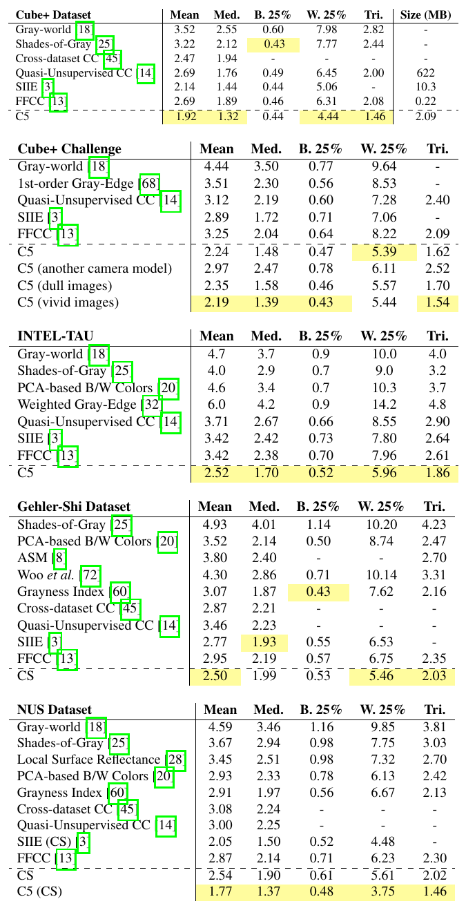
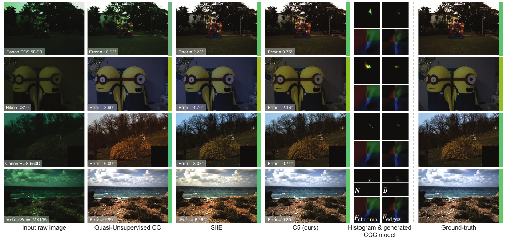

Cross-Camera Convolutional Color Constancy

1. 出发点 (Motivation)
色彩恒常（color constancy）对应到工程上，就是自动白平衡（AWB）：估计场景光源颜色 \(\boldsymbol\ell\)，再把每个像素按通道除以它，让白纸在暖光和冷光下都显示成白色。
学习型 AWB 一直有个落地问题：模型绑定在一块传感器上。不同传感器的光谱灵敏度不同，同一组场景、同一组光源，在两台相机的 RAW 色度空间里会落在不同位置（论文 Fig. 2 中，Canon 1Ds Mk-III 和 Sony SLT-A57 拍同一批 NUS 场景，log-chroma 直方图的位置明显错开）。FFCC、FC4 这类单相机方法会记住训练相机的光源分布，比如黑体轨迹在该相机 RAW 空间里长什么样，换一台相机就失效。论文 Fig. 7 里，FFCC 在 Sony A57 上测误差 0.55°，换到 Olympus EPL6 变成 9.65°。
手机厂商每上一个新传感器，就要采几百上千张带色卡的标注图重训一遍 AWB，成本很高。已有的跨相机思路有两类：
- 传感器无关表示：例如 SIIE（Afifi & Brown, BMVC 2019）学一个与设备无关的中间空间，Quasi-Unsupervised CC 学识别无彩色物体的语义。缺点是推理时只看一张图，对新相机的光谱特性没有任何了解。
- 少样本 / 元学习：例如 Meta-AWB、MDLCC。仍然需要新相机的少量有标注图。
C5 换了个角度，也就是直推式推理（transductive inference）：测试时除了待处理的那张图，再给模型同一台相机拍的 \(m-1\) 张无标注、未白平衡的照片。作者的依据是灰世界假设的一个跨传感器性质：单张图上它不可靠，但如果看很多张同一台相机的图，大致就能推断这台相机的「光源可能落在哪一片色度区域」。Fig. 2 中黄色点表示真实光源均值，它就落在绿色直方图云团的位置。
RAW / 传感器空间
传感器直接输出的线性 RGB，还没经过白平衡、色彩矩阵和 gamma。每台相机的「RGB」含义都不一样。
log-chroma (u, v)
u = log(G/R)，v = log(G/B)。亮度被除掉，只剩色度。整张图乘一个光源色，在 uv 平面上就变成整体平移。
CCC / FFCC
Barron 2015 / Barron & Tsai 2017 的卷积色彩恒常：在 uv 直方图上做一次卷积加偏置，热力图峰值所在的位置就是光源。FFCC 用 FFT 加速，并把直方图做了环绕（wrap）处理。
超网络 (hypernetwork)
输出另一个模型权重的网络。C5 输出的是 CCC 的 F 和 B。
直推式推理
推理时利用测试集里的其他样本（这里是同一台相机的无标注照片），让模型针对当前测试分布做调整。
角误差 (angular error)
预测光源向量和真值光源向量之间的夹角，单位为度。AWB 领域的标准指标，1° 左右基本看不出偏色，3° 以上肉眼可见。
CST / ColorMatrix
Color Space Transform：DNG 文件里的 3×3 矩阵，在相机 RAW 和 CIE XYZ 之间转换。通常给两组，标定于标准光源 A（约 2856K）和 D65。
CCT
相关色温（Correlated Color Temperature）：和光源颜色最接近的黑体辐射温度，单位 K。
Luther 条件
传感器的三条光谱灵敏度曲线恰好是人眼配色函数的线性组合。满足时，一个 3×3 矩阵就能把 RAW 精确变到 XYZ；真实传感器都不满足，差的那部分就表现为同色异谱误差。
2. 方法 (Method)

2.1 底座：把白平衡变成在直方图上找一个点
成像模型是逐像素的对角缩放：
—— 翻译：观测到的像素色 $\mathbf{c}$ 等于物体的真实颜色 $\mathbf{w}$ 逐通道乘以光源色 $\boldsymbol\ell$。白平衡要做的，就是猜出 $\boldsymbol\ell$，再除掉它。
取 log 色度：
—— 翻译：用 G/R 和 G/B 的对数表示一个像素的颜色。乘法在 log 域里变成加法，所以「整张图乘一个光源色」就变成「所有点在 uv 平面上平移同一段距离」。
对全图做一个亮度加权的 2D 直方图（64×64 个 bin，范围 ±2.85）：
—— 翻译：对每个 uv 格子，统计落进去的像素，亮的像素权重大（作者认为亮像素对光源的信号更可靠）。$N_1$ 的构造方式相同，只是把像素换成局部梯度强度，相当于边缘的颜色分布。
于是，「估计光源」等价于「在 uv 平面上定位直方图的平移量」。这和滑窗目标检测是同一类问题：
—— 翻译：把两张直方图分别和滤波器 $F_0,F_1$ 卷积后相加，再加一张偏置图 $B$（它代表「哪些光源常见」的先验，比如黑体轨迹附近），经过 softmax 得到光源位置的概率热力图 $P$。对 $P$ 求 u、v 的期望（soft-argmax），得到光源的色度坐标。
最后把 \((\hat\ell_u,\hat\ell_v)\) 还原成单位 RGB 向量：\(\hat{\boldsymbol\ell} = (e^{-\hat\ell_u}, 1, e^{-\hat\ell_v})/z\)，其中 \(z\) 是归一化常数（论文 Eq. 6–7）。
类比：\(F\) 是「光源长什么样」的模板，\(B\) 是「光源通常出现在哪」的先验。CCC 和 FFCC 对一台相机学一套固定的 \(F\) 和 \(B\)。问题在于，换一台相机后，整个 uv 坐标系里的「黑体轨迹」都移动了，固定的 \(B\) 就指错了地方。
2.2 C5：用一组无标注照片现场生成 F 和 B
C5 的改动很少：\(F\) 和 \(B\) 不再是自由参数，而是网络的输出 \(F_i(\theta), B(\theta)\)。网络的输入是 query 直方图加上 \(m-1\) 张附加直方图。

设计上有三个要点：
- 置换不变：附加图是从相册随机抽的，没有顺序，所以分支之间用 max-pooling 汇合（借鉴 Aittala & Durand 的 burst 去模糊工作）。
- CoordConv 的 uv 通道：卷积天然平移不变，但这里「直方图落在 uv 平面的哪个绝对位置」本身就是信号，比如偏绿的相机整体会偏向某一侧。所以额外拼上两个坐标通道，让网络能感知绝对色度。
- 只有 query 分支有跳连：解码出来的 \(F\) 和 \(B\) 要在 query 的直方图坐标上精确对齐，附加图只通过池化后的全局特征提供「这台相机的统计特性」。
代码里的 cross-pooling 合并逻辑：每个 block 后，把所有分支的特征堆起来取 max，再把池化结果拼回各分支，用 1×1 卷积融合（对应 Fig. 4 中的「1×1 conv」和「cross-pooling after concatenation」）：
repo/src/c5.py:L517-L535 — 每个编码 block 后跨分支 max-pooling，结果拼回各分支后做 1×1 卷积
if self.merge_layers is not None:
if data_j == 0:
stacked_latent = torch.unsqueeze(latent_x[data_j], dim=-1)
else:
stacked_latent = torch.cat([stacked_latent,
torch.unsqueeze(latent_x[data_j],
dim=-1)], dim=-1)
if self.merge_layers is not None:
pooled_data = self.cross_pooling(stacked_latent)
if encoder_block_i < (self.encoder_depth - 1):
for data_j in range(self.data_num):
latent_x[data_j] = self.merge_layers[data_j][
encoder_block_i](torch.cat([latent_x[data_j], pooled_data],
dim=1))
if self.merge_layers is None:
y = latent_x[0]
else:
y = pooled_data
self.cross_pooling 就是 torch.max(x, dim=-1)（c5.py:L381-L396）。注意每个分支有自己的一套编码器权重（c5.py:L437-L479 按 data_num 建了 data_num 份 encoder_i），而不是共享权重。所以网络知道哪一路是 query，但附加图分支之间的位置在代码层面并不完全对称。这一点我在 §4 讨论。
网络生成 \(F\) 和 \(B\) 之后，CCC 推理（Eq. 4–7）在 forward 里几乎逐行对应论文：
repo/src/c5.py:L155-L186 — FFT 卷积、加偏置、softmax 热力图、soft-argmax，再还原成 RGB（Eq. 4–7）
# convolving over the histogram in the frequency domain
# comment out this part if torch 1.8 or higher is used.
N_fft = torch.rfft(N[:, :2, :, :], 2, onesided=False)
F_fft = torch.rfft(F, 2, onesided=False)
N_after_conv = torch.irfft(ops.complex_multiplication(N_fft, F_fft), 2,
onesided=False)
# uncomment this part if torch 1.8 or higher is used.
# N_fft = fft.rfft2(N[:, :2, :, :])
# F_fft = fft.rfft2(F)
# N_after_conv = fft.irfft2(N_fft * F_fft)
# adding the bias
N_after_conv = torch.sum(N_after_conv, dim=1)
if G is not None:
N_after_bias = (G * N_after_conv) + B
else:
N_after_bias = N_after_conv + B
# generating the heat map
N_after_bias = torch.clamp(N_after_bias, -100, 100)
P = self.softmax(torch.reshape(N_after_bias, (N_after_bias.shape[0], -1)))
P = torch.reshape(P, N_after_bias.shape)
# producing the RGB illuminant estimate
u = torch.sum(P * self.u_coord, dim=[-1, -2])
v = torch.sum(P * self.v_coord, dim=[-1, -2])
u, v = ops.from_coord_to_uv(self.input_size, u, v)
rgb = ops.uv_to_rgb(torch.stack([u, v], dim=1), tensor=True)
return rgb, P, F, B, G
N[:, :2] 只取像素和梯度这两个通道参与卷积（不含 uv 坐标通道）。torch.sum(..., dim=1) 对应 Eq. 4 里的 \(\sum_i\)。G 是附录 Eq. 10 里可选的增益图 \(G\)（--learn-G）。
2.3 损失：角误差加「让生成的滤波器平滑」
—— 翻译：第一项是预测光源和真值光源的夹角（$\hat{\boldsymbol\ell}$ 已是单位向量）。后两项用 Sobel 算子惩罚生成的 $B$ 和 $F$ 的梯度，要求它们平滑，类似 FFCC 的总变差先验。区别在于，这里约束的是网络「输出的模型」，而网络自身的权重 $\theta$ 另外有 $5\times10^{-4}$ 的 weight decay。论文取 $\lambda_F=0.15$、$\lambda_B=0.02$。
repo/train.py:L344-L363 — F 的 Sobel 平滑正则，与 B、G 的正则项求和后加到角误差上（Eq. 9）
# smoothing regularization for F
s_loss_F_chroma = (torch.mean(torch.nn.functional.conv2d(
torch.unsqueeze(F_chroma, dim=1), u_variation, stride=1) ** 2) +
torch.mean(torch.nn.functional.conv2d(
torch.unsqueeze(F_chroma, dim=1), v_variation,
stride=1) ** 2))
s_loss_F_edges = (torch.mean(torch.nn.functional.conv2d(
torch.unsqueeze(F_edges, dim=1), u_variation, stride=1) ** 2) +
torch.mean(torch.nn.functional.conv2d(
torch.unsqueeze(F_edges, dim=1), v_variation,
stride=1) ** 2))
s_loss_F = smoothness_factor_F * (s_loss_F_chroma +
s_loss_F_edges)
# final smoothing regularization
smoothness_loss = s_loss_F + s_loss_G + s_loss_B
loss = loss + smoothness_loss
u_variation 和 v_variation 是 train.py:L169-L178 里写死的 3×3 Sobel 核。代码用 torch.mean 而不是论文写的平方和 \(\|\cdot\|^2\)，两者只差一个常数（64×64 像素数），这个常数被吸收进 \(\lambda\)。所以论文里的 λ 值只能在这份代码的 mean 约定下直接复用。
2.4 数据增广：经 CIE XYZ 把一台相机的 RAW「换成」另一台
这一节是本页专项背景最需要的部分（附录 D，§4.1）。NUS 数据集每台相机只有约 200 张图，训练一个跨相机模型远远不够。所以作者把源相机的 RAW 映射到目标相机的传感器空间，凭空造出「目标相机拍的」训练样本：

第一步：随色温插值的 CST。DNG 一般带两组标定矩阵 \(C_1\)、\(C_2\)，分别对应低色温（标准光源 A）和高色温（D65）。对任意光源，按倒数色温线性插值：
—— 翻译：光源色温 $q_\ell$ 越接近 $q_1$（比如 2856K），就越偏向使用矩阵 $C_1$。插值变量取 $1/q$（mired 尺度），因为色温的倒数在色度图上更接近均匀分布。这就是 Adobe DNG 规范里 ColorMatrix1/2、ForwardMatrix1/2 的标准用法。
这里有个先有鸡还是先有蛋的问题：求色温 \(q_\ell\) 需要先把 RAW 光源换到 XYZ，而换到 XYZ 又需要先知道色温。论文附录 D.2 的解法是暴力搜索：在 2500K–7500K 之间遍历 \(q_i\)，用普朗克定律和 CIE 配色函数算出 \(q_i\) 对应的 xyz 色度，再用 \(C_{q_i}^{-1}\) 映射到 RAW 空间，和实测光源 \(\boldsymbol\ell\) 比较角误差，取误差最小的那个 \(q_i\)。
第二步：源 RAW → XYZ → 目标 RAW。
—— 翻译：先用源图自己的真值光源做对角白平衡（$D_\ell$），再乘源相机在该色温下的 CST 进入 XYZ。然后乘目标相机 CST 的逆 $M^{-1}$，回到「已白平衡的目标相机 RAW」。最后乘上一个目标相机空间里的光源色（$D^{-1}$，逐通道乘光源），把偏色「装回去」，得到一张逼真的目标相机未白平衡 RAW，以及它的真值光源标签。
第三步（最关键的一个决定）：光源色不走矩阵。论文附录 D.3 写道：
前面的步骤假设所有传感器都满足 Luther 条件……但已有研究表明这个假设往往不成立，会影响预标定矩阵的精度。因此我们只用 Eq. 18–19 映射场景中物体的原始颜色（即白平衡后的颜色）。对于全局色偏 \(\ell_{raw(T)}\)，我们不用 \(M^{-1}\) 把源光源映射过去，而是用 K 近邻策略从目标传感器自己的光源分布里采样。
具体做法：用色温、增益（BaselineNoise×ISO）、曝光（\(\sqrt{2^{BLE}}\)×曝光时间）、光圈组成特征，从目标相机的元数据里找 K=15 个拍摄条件最像的样本，用 \(w_j \propto \exp(1-d_j)\) 加权平均它们的光源 r 色度，再加一个小扰动；g 色度由一条拟合在目标相机 rg 光源点上的多项式曲线给出（Eq. 23–25，Fig. 10）。目标相机的 CST \(M\) 也用同一组权重对这 K 个样本的矩阵做加权平均：
repo/src/aug_ops.py:L352-L377 — KNN 加权插值目标相机的 raw2xyz 并求逆；在目标相机自己的光源轨迹上采样光源；先映射颜色，再逐通道装回偏色
nearest_inds, dists = knnsearch(feature_vecs, in_feature_vec, k)
dists = dists / (sum(dists) + ops.EPS)
probs = softmax(1 - dists)
chroma = np.zeros((len(dists), 2))
raw2xyz_matrices = np.zeros((len(dists), 3, 3))
for i, index in enumerate(nearest_inds):
raw2xyz_matrices[i, :, :] = t_camera_data[index]['raw2xyz']
chroma[i, :] = t_camera_data[index]['illuminant_chromaticity_raw']
raw2xyz = np.sum(np.reshape(probs, (-1, 1, 1)) * raw2xyz_matrices, axis=0)
xyz2raw = np.linalg.inv(raw2xyz)
chroma_r = sum(
probs * chroma[:, 0]) + lambda_r * np.random.normal(0, np.std(chroma[:, 0]))
chroma_g = predict(chroma_r, chromaticity_ML) + lambda_g * np.random.normal(
0, np.std(chroma[:, 1]))
chroma_b = 1 - chroma_r - chroma_g
gt_ill = [chroma_r, chroma_g, chroma_b]
gt_ill = np.array(gt_ill)
gt_ill = gt_ill / ops.vect_norm(gt_ill, tensor=False, axis=0)
im = apply_cst(im, xyz2raw)
for c in range(3):
im[:, :, c] = im[:, :, c] * gt_ill[c] / gt_ill[1]
对照论文：probs = softmax(1 - dists) 就是 Eq. 23 的 \(w_j\)；raw2xyz 的加权平均对应「\(M\) 由 \(T_K\) 中各样本的 CST 用 \(w_j\) 线性插值得到」；im * gt_ill[c] / gt_ill[1] 是以 G 通道为基准的对角色偏，也就是 Eq. 19 的 \(D^{-1}\)。输入的 im 是作者预先算好并放在 Google Drive 上的 XYZ 图（README 的 Data augmentation 一节）。第一步、第二步前半段（Eq. 15–18，RAW→XYZ 和色温搜索）不在开源代码里，src/aug_data.json 中只存了每张图算好的 raw2xyz、color_temp 等结果。
2.5 消融决策表
| 组件 | 起点 | 消融方向 | 最终选择 | 为什么 |
|---|---|---|---|---|
| 附加图数 \(m\) | \(m=1\)（只看 query） | 1 / 3 / 5 / 7 / 9 / 11 / 13 | Cube+ 用 7–9 | Cube+ 平均误差从 2.60° 降到 1.87°（\(m=7\)），之后持平或略升（Tab. 4）。图多了没坏处，但收益在 7 张左右饱和 |
| 直方图分辨率 \(n\) | 64 | 16 / 32 / 64 / 128 | 64 | 2.28 / 2.02 / 1.87 / 2.03（Tab. 2）。太粗会损失色度精度；太细则每个 bin 样本稀疏，网络也更难训 |
| 梯度直方图 \(N_1\) | 有 | 去掉 | 保留 | 去掉后 1.87→2.30，最差 25% 从 4.36→5.51。边缘颜色对大面积单色场景是关键线索 |
| uv 坐标通道 | 有 | 去掉 | 保留 | 1.87→2.03。卷积平移不变，必须靠坐标通道告诉网络「绝对色度」 |
| 平滑正则 \(\lambda_B,\lambda_F\) | 0, 0 | 0 到 0.25/1.85 | 0.02 / 0.15 | 不加 2.07，过强 2.23，适中 1.87。U 形曲线，生成的模型也需要正则 |
| 递增 batch | 固定 16 | 16→64 | 递增 | 1.93→1.87，验证集收敛到更低的位置（Fig. 8） |
| XYZ 增广 | 不增广 | +5000 张跨相机合成图 | 增广 | Cube+ 2.10→1.87，INTEL-TAU 2.62→2.49（Tab. 3）。新相机少，合成样本能补「相机多样性」 |
| 增益图 \(G\) | 无 | 加 \(G\)（Eq. 10） | 跨相机不加，单相机加 | 各数据集上互有胜负（Tab. 5），不稳定，所以主模型不用 |
3. 结论 (Key findings)

- 跨相机精度 SOTA：Cube+ 平均 1.92° / 中位 1.32°，SIIE 为 2.14 / 1.44，FFCC 为 2.69 / 1.89。INTEL-TAU 2.52°，SIIE 3.42，FFCC 3.42。NUS（CS 协议）1.77°，SIIE 2.05。Gehler-Shi 上只有 CS 设定的 2.50°。最差 25% 的改善最明显：Cube+ 4.44，FFCC 6.31，INTEL-TAU 5.96 对 7.80–7.96。说明它主要修掉的是「换相机后大幅翻车」这类失败。
- 附加图真的在起作用：\(m=1\) 时 Cube+ 为 2.60°，\(m=7\) 时 1.87°（Tab. 4）。如果附加图来自另一台相机，Cube+ Challenge 误差从 2.24° 升到 2.97°（Tab. 1）。说明网络确实在读「这台相机」的统计特性，而不是单纯多看几张图做集成。
- 附加图选色彩丰富的更好：选 uv 方差最大的 20 张（vivid）为 2.19°，方差最小的 20 张（dull）为 2.35°，随机选为 2.24°。直觉上，色彩丰富的场景更能暴露传感器的光谱响应。
- 小而快：模型约 2.09 MB（Quasi-Unsupervised CC 为 622 MB，SIIE 为 10.3 MB），GTX 1080 上约 7 ms，Xeon CPU 上约 90 ms（不含直方图计算）。
- 当单相机模型用不吃亏：\(m=1\)、\(n=128\)、加 \(G\) 时，Cube+ 1.39°，与 FFCC 1.38° 持平（Tab. 7）。
- XYZ 中转本身有用：只用合成数据训练 FFCC（Canon 1Ds Mk III → Canon 5D），经过 XYZ 中转为 3.04°，直接 RAW 对 RAW 映射为 3.30°（Tab. 10）。只用合成数据训练，作者的方法 2.44°，CIE XYZ Net 的方法 4.17°（Tab. 9）。这几组是对物理颜色映射这一步最直接的量化验证。

4. 实现细节 (Implementation notes)
仓库为官方 mahmoudnafifi/C5（作者为论文一作，README 署名与论文一致，Apache-2.0，HEAD dca9236，2024-01）。仓库附带两个预训练模型 models/C5_m_7_h_64.pth 和 ..._w_G.pth，以及 INTEL-TAU 中 Sony IMX135 的几张示例图。
-
FFT 卷积其实是循环卷积（与论文描述有出入）。论文说 C5 用「non-wrapped histogram and thus non-wrapped filters and bias」，以避开 FFCC 的去混叠。直方图本身确实没有环绕：
ops.get_hist_boundary直接覆盖 ±2.85（ops.py:L53-L62）。但c5.py:L157-L160对 64×64 的N和F直接做rfft → 相乘 → irfft，没有补零，数学上就是循环卷积，滤波器在边界上会绕到对边。实际影响有限：数据多集中在 uv 中心区域，网络也能学着让 F 的边缘接近 0。但从字面看，「non-wrapped filters」在代码里并没有实现。另外torch.rfft/irfft在 PyTorch 1.8+ 已被移除，新版本要按注释切换到torch.fft.rfft2（c5.py:L162-L165）。 -
直方图有一步论文没写的开方归一化，bin 宽也与附录 A 的定义差一个 bin：
repo/src/ops.py:L249-L277 — 亮度加权 uv 直方图（Eq. 3），末尾 sqrt(N/ΣN)
eps = np.sum(np.abs(hist_boundary)) / (nbins - 1)
hist_boundary = np.sort(hist_boundary)
A_u = np.arange(hist_boundary[0], hist_boundary[1] + eps / 2, eps)
A_v = np.flip(A_u)
if rgb_input is None:
Iy = np.ones(chroma_input.shape[0])
else:
Iy = np.sqrt(np.sum(rgb_input ** 2, axis=1))
# differences in log_U space
diff_u = np.abs(np.tile(chroma_input[:, 0], (len(A_u), 1)).transpose() -
np.tile(A_u, (len(chroma_input[:, 0]), 1)))
# differences in log_V space
diff_v = np.abs(np.tile(chroma_input[:, 1], (len(A_v), 1)).transpose() -
np.tile(A_v, (len(chroma_input[:, 1]), 1)))
# counts only U values that is higher than the threshold value
diff_u[diff_u > eps] = 0
diff_u[diff_u != 0] = 1
# counts only V values that is higher than the threshold value
diff_v[diff_v > eps] = 0
diff_v[diff_v != 0] = 1
Iy_diff_v = np.tile(Iy, (len(A_v), 1)) * diff_v.transpose()
N = np.matmul(Iy_diff_v, diff_u)
norm_factor = np.sum(N) + EPS
N = np.sqrt(N / norm_factor) # normalization
return N
Iy 就是 Eq. 3 的 \(\|\mathbf{c}\|_2\)。|diff| ≤ eps 对应 Iverson 括号，由于 bin 中心间距也是 eps，每个像素会同时计入相邻两个 bin，相当于三角核软分箱。论文没写的有两处。一是 sqrt(N/ΣN)：先归一化成概率，再开方压缩动态范围，避免大面积单色区域主导直方图。二是 bin 中心间距为 5.7/(n-1)，而解码时 from_coord_to_uv 用 5.7/n（ops.py:L136-L153），两者比例 63/64。估出的 uv 会向 0 收缩约 1.6%。因为整个系统端到端训练，热力图位置会跟着学，误差能被吸收，但复现或移植时最好保持一致。
-
「梯度直方图」用的不是 Sobel 梯度，而是像素与 8 邻域差的绝对值平均（
ops.py:L432-L456，compute_edges），逐通道计算后再取 log-chroma。可以理解为局部对比度的颜色。用 Sobel 的是平滑正则（train.py:L169-L178）。 -
角误差里 π 取的是 22/7：
ops.py:L26中PI = 22.0 / 7.0，angular_loss用180.0 / PI把弧度换成度（ops.py:L29-L50）。180/(22/7)=57.27，正确值 57.30，报告的度数系统性偏低约 0.04%。对表里的数字没有实质影响，但移植评测代码时应改用math.pi。训练时还有cossim * 0.9999999的「angle shrink」，避免acos在 ±1 处梯度爆炸，打印时再换算回去（train.py:L313-L318）。
repo/src/ops.py:L29-L50 — 角误差损失（Eq. 8 第一项），含 shrink 与 22/7 的 π
def angular_loss(predicted, gt, shrink=True):
""" Computes angular error between predicted and gt illuminant color(s)
Args:
predicted: n x 3 tensor of predicted illuminant colors; where n is the
total number of predicted illuminant colors.
gt: n x 3 tensor of corresponding ground-truth true illuminant colors.
shrink: to use angle shrink for training; default is True.
Returns:
a_error: mean angular error between predicted and gt illuminant colors.
"""
cossim = torch.clamp(torch.sum(predicted * gt, dim=1) / (
torch.norm(predicted, dim=1) * torch.norm(gt, dim=1) + EPS), -1, 1.)
if shrink:
angle = torch.acos(cossim * 0.9999999)
else:
angle = torch.acos(cossim)
a_error = 180.0 / PI * angle
a_error = torch.sum(a_error) / a_error.shape[0]
return a_error
apply_cst有原地覆盖的 bug。这一条对想复用这段代码做 iPhone→目标相机 3×3 映射的读者最重要：
repo/src/aug_ops.py:L514-L529 — 对图像逐通道应用 3×3 CST；result 与 im 是同一个数组
def apply_cst(im, cst):
""" Applies CST matrix to image.
Args:
im: input ndarray image ((height * width) x channel).
cst: a 3x3 CST matrix.
Returns:
transformed image.
"""
result = im
for c in range(3):
result[:, :, c] = (cst[c, 0] * im[:, :, 0] + cst[c, 1] * im[:, :, 1] +
cst[c, 2] * im[:, :, 2])
return result
result = im 并没有复制数组。算第 1、2 通道时读到的 im[:, :, 0]（以及 im[:, :, 1]）已经被前面的循环覆盖。我用 aug_data.json 里一组典型 xyz2raw 量级的矩阵手算过：输入 (0.3, 0.5, 0.2) 时，真实的 \(M\mathbf{x}\) 是 (0.269, 0.504, 0.255)，这段代码给出 (0.269, 0.516, 0.260)，G、B 通道各偏差约 2%。也就是说，发布的增广代码实际应用的不是 \(M^{-1}\)，而是一个被扭曲的三角化变换。论文 Tab. 3/8–11 的增广收益是否在这个 bug 下测得，无法从仓库判断。如果自己复用，改成 im @ cst.T 即可。
-
predict是二次多项式，不是论文写的三次：Eq. 24 写作 \(g=[r,r^2,r^3]\,\xi\)。aug_ops.py:L495-L511的基函数是 \(x^0..x^{d-1}\)，而aug_data.json中chromaticity_ML只有 3 个系数，所以实际是 \(\xi_0+\xi_1 r+\xi_2 r^2\)。另外lambda_g默认 1.2（aug_ops.py:L39），论文写 \(\lambda_g=1\)；lambda_r=0.7与论文一致，K=15 论文没有给出。 -
超参与论文一致的部分：argparse 默认 60 epochs、batch 16、lr 5e-4、L2 5e-4、Adam(0.9, 0.999)、cosine 退火（
train.py:L552-L570、L243-L250）。递增 batch 在第 20、50 个 epoch 翻倍（train.py:L254-L266），所以 16→32→64，与论文「16→64」一致（代码上限 128 在 60 个 epoch 内达不到）。注意train_net的函数签名默认值（train.py:L49-L52：lr=0.001、batch 64、epochs 1000、l2 1e-5）和 argparse 不同，直接 import 调用会走另一套超参。 -
\(m\) 的口径不一致：§3.2 和附录 C 说 Table 1 用「8 张附加图」（\(m=9\)），开源的预训练模型却是
C5_m_7（6 张附加图），Table 3 的 ablation 也用 \(m=7\)。Table 4 中 Cube+ 的 \(m=7\) 结果（1.87）比 Table 1 的 1.92 还好，两组数字出自不同的 \(m\)。复现 Table 1 时要自己训一个 \(m=9\) 的模型。 -
附加图的选法：
dataset.py:L237-L263按文件名里的_sensorname_<camera>字段找到同一相机的其他图，random.shuffle后取前 \(m-1\) 张。所以推理时需要知道「哪些图来自同一台相机」，这个信息靠文件名，而不是 EXIF。测试时也一样，所以论文中每个实验都重复 10 次取平均。 -
推理输出只是一个对角增益，C5 不做色彩矩阵。
test.py的白平衡就是逐通道除以光源，再做一次 gamma 预览：
repo/test.py:L127-L134 — 用估计光源做 von Kries 对角校正，然后 gamma 1/2.2 存图
if white_balance and test_i == 0:
bs = image.shape[0]
for c in range(3):
correction_ratio = predicted_ill[:, 1] / predicted_ill[:, c]
correction_ratio = correction_ratio.view(bs, 1, 1)
image[:, c, :, :] = image[:, c, :, :] * correction_ratio
image = 1 * torch.pow(image, 1.0 / 2.19921875)
for b in range(bs):
save_image(make_grid(image[b, :, :, :], nrow=1), os.path.join(
save_filter_dir_wb, file_names[b]))
输出仍在相机 RAW 色彩空间（只是白平衡过），没有 CCM，也不进 sRGB。要得到「目标相机的颜色」，必须另外接 §2.4 那条 XYZ 映射链，或者接一个完整的 ISP。
论文与代码不一致汇总：(1) FFT 为循环卷积，与「non-wrapped filters」的表述不符；(2) 直方图多了 sqrt 归一化，bin 宽差 63/64；(3) apply_cst 原地覆盖，3×3 映射不正确；(4) g 色度用二次而不是三次多项式，λ_g 为 1.2 而不是 1；(5) Table 1 的 m=9 与发布模型的 m=7 不一致；(6) π=22/7。另外，XYZ 前半段（Eq. 15–18 的色温搜索与 CST 插值）没有开源，只能拿到 aug_data.json 里的结果。
5. 批判性总结 (Critical assessment)
Strengths
- 问题定义贴近工程：「新传感器零标注上线」正是手机 ISP 团队的真实痛点。用无标注的相册图做校准，部署成本几乎为零。
- 以小博大：只替换了 CCC 的两个参数张量，整套系统 2 MB / 7 ms，保留了 CCC「平移等变 + 可解释热力图」的归纳偏置，网络只负责「调参」。Fig. 6 中可以直接看到每台相机生成的 B。
- 控制实验到位：「附加图来自别的相机」和 dull/vivid 两组实验直接证明了直推机制在起作用，而不只是让模型更大。
- 增广部分对「Luther 条件不成立」很坦白：物体颜色走 3×3，光源颜色走目标相机的经验分布。这个工程判断比「全靠矩阵」更稳妥。
Limitations / open questions
- 只解决了「光源是什么」，没有解决「颜色长什么样」：输出是一个全局对角增益，对同色异谱、相机间色域差异、饱和色偏差都无能为力。跨相机的颜色再现一致性仍然要靠 CCM/CST，而 C5 本身不学这一部分。
- 单一全局光源假设：混合光（室内灯加窗外日光）、局部光源都不在建模范围内。最差 25% 的误差在 INTEL-TAU 上仍有 5.96°；论文附录 Fig. 9 列出的 worst-25% 样例中，C5 的误差为 4.29°–8.61°。
- 直推依赖「同一台相机」的元信息：附加图必须确知来自同一个传感器，代码靠文件名。如果相册混入不同镜头模组（手机广角/长焦/超广角各有传感器）或第三方图片，就相当于「another camera」设定，误差从 2.24° 升到 2.97°。论文没有讨论多摄手机。
- 测试协议仍偏 DSLR：训练相机全是 DSLR 或无反（NUS、Gehler-Shi、Cube+），手机只有 INTEL-TAU 里的 Sony IMX135 一台。手机小像素、强色串扰、带 IR-cut 镀膜的光谱特性与 DSLR 的差距可能比 DSLR 之间更大，泛化性证据偏少。
- 增广的物理链依赖厂商矩阵：作者自己承认精度受 DNG 预标定矩阵、色温到 XYZ 标准映射和积分离散化的影响（附录 D.2）。加上代码中的
apply_cstbug，增广数据的「物理正确性」打了折扣。 - 附加图的选择没有充分研究：「vivid 更好」只是用 20 张图的一个启发式。附加图里有极端场景（夜景、单色舞台光）时会怎样，没有分析。
When to use / not use
- 用：需要给新相机或新手机模组快速上线 AWB、手头只有无标注照片时；或者在 RAW 处理流水线里需要一个跨设备的光源估计模块，例如在做 iPhone RAW → XYZ 之前，先估计场景光源来决定 CST 插值的色温。
- 不用：需要处理混合光照或局部光照；需要整体的「颜色风格」迁移（色调曲线、饱和度、肤色偏好）；只有 sRGB JPEG、没有线性 RAW（C5 的 log-chroma 平移性质依赖线性响应）。
延伸阅读 (Further reading)
交叉验证比较：「跨设备颜色要不要过 XYZ」「颜色交给物理还是交给网络」这两个问题上，几项工作的结论对照如下：
| 工作 | 核心结论 | 关键观察 | 与本文的异 / 同 |
|---|---|---|---|
| 本文 C5 | 跨相机 AWB：用目标相机的无标注图现场生成 CCC 参数 | 附加图来自别的相机就退化（2.24→2.97°）；XYZ 中转优于 RAW 对 RAW 直接映射（3.04 对 3.30） | — |
| SIIE（Afifi & Brown, BMVC 2019） | 学一个与传感器无关的中间空间，在里面估计光源 | 单图推理，Cube+ 2.14°、INTEL-TAU 3.42°（本文 Tab. 1 复现） | 同：目标都是「一个模型适配所有相机」，同一作者。异：SIIE 想消除传感器差异，C5 想感知传感器差异；后者在最差 25% 上好得多（4.44 对 5.06） |
| FFCC（Barron & Tsai, CVPR 2017） | 单相机 FFT 加速的 CCC，同相机下极强 | 同相机 Cube+ 1.38°（Tab. 7），跨相机 Olympus 9.65°（Fig. 7） | 同：C5 的推理头就是简化版 FFCC。异：参数固定还是动态生成，决定了能否泛化到新相机 |
| unprocessing-2018 | 为 RAW 去噪合成训练数据：sRGB 逆 ISP 到 RAW，CCM 取 4 台相机 XYZ→Camera 矩阵的随机凸组合 | 不追求映射到「某一台」特定相机，而是覆盖几台相机矩阵张成的空间 | 同：都把 CIE XYZ 当作跨设备的中转站，用厂商矩阵构造「像某台相机」的 RAW。异：Unprocessing 把光源（白平衡增益）当成随机变量随便采；C5 坚持光源要从目标相机自己的光源轨迹上采样，更贴近物理 |
| pynet-2020 | 端到端 CNN：华为 P20 RAW → Canon 5D 的 sRGB | 颜色、白平衡、色调全靠网络从配对数据里学，低层用 MSE 管全局颜色 | 异：PyNET 完全不显式建模颜色，只能复刻训练时那一台目标相机的风格；C5 的显式物理链和直推设计，正是为了泛化到没见过的相机 |
分歧的可能成因：Unprocessing 和 PyNET 的目标是「下游任务够用」，去噪只关心噪声统计，PyNET 只关心某一台目标相机的观感，所以颜色可以粗糙地随机化，或者交给网络去记。C5 的任务本身就是颜色估计，任何颜色上的偏差都直接计入误差，因此必须认真对待「每台传感器的光源轨迹不同」和「3×3 矩阵不够精确」这两件事。目标函数决定了颜色建模要做到多细。
相关工作
- unprocessing-2018：XYZ 中转与随机 CCM 合成 RAW 的另一种用法
- pynet-2020：手机 RAW → DSLR 的端到端学习式 ISP
- CCC（Barron, ICCV 2015）/ FFCC（Barron & Tsai, CVPR 2017）：C5 推理头的来源
- Karaimer & Brown, Improving color reproduction accuracy on cameras（CVPR 2018）：论文 Eq. 15–16 中 CST 色温插值的出处，研究相机上的颜色再现精度，值得和本页一起读
6. 研究启发：对「手机照片 → 目标相机画质」的借鉴
这一节专门对应「iPhone（Bayer RAW）→ 目标相机」的专项。已讨论过的颜色方案是：从两台设备 DNG 的 ColorMatrix/ForwardMatrix 经 CIE XYZ 得到 iPhone RGB → 目标相机 RGB 的初始 3×3，再用色卡细化。C5 附录 D 几乎是这个方案的完整实现，而且踩过其中几个坑。
1. 3×3 必须随色温变化，按 1/CCT 插值
DNG 的 ColorMatrix1/2（以及 ForwardMatrix1/2）对应 A 光和 D65 两个标定点。跨相机映射矩阵应写成 $M_T^{-1}(q)\,C_S(q)$，其中两边都按 Eq. 16 的倒数色温插值，而不是固定一个矩阵。这又意味着映射前要先知道场景色温：可以用 iPhone DNG 的 AsShotNeutral，或者用 C5 这类估计器，再照附录 D.2 在 2500–7500K 之间搜索最匹配的色温。白平衡估计不准会直接传导成颜色矩阵选错。
2. 物体颜色走矩阵，白点走目标相机自己的轨迹
这是 C5 最值得借鉴的一个决定。由于两台传感器都不满足 Luther 条件，用 3×3 把 iPhone 的光源色「推」到目标相机空间并不可靠。正确做法是：在白平衡后的空间里只映射物体颜色，然后到目标相机实拍样本（同色温、同曝光条件的 K 近邻）里取它的光源色或 AWB 增益。对你的场景来说，就是采一批目标相机在各种光源下的 RAW 和 AsShotNeutral，建一条目标相机的白点轨迹查找表；如果目标相机的 AWB 有固定偏好（例如整体偏暖），这张表也会把它一并记下来。
3. 色卡细化要分光源做，并预期同色异谱残差
3×3 只能把 24 色卡拟合到最小二乘意义上的最好，剩下的误差是两台传感器光谱响应之差在各种反射率上的投影，饱和色（深蓝、品红、肤色以外的高彩度颜色）最明显。建议在 A、D50/D65 和常见 LED/荧光灯下各拍一组色卡，每个光源单独拟合，再按 1/CCT 插值。这和 DNG 用两组矩阵是同一个道理。窄带光源（LED、荧光灯）的同色异谱误差最大，单个 3×3 修不好，需要 root-polynomial 或 3D LUT 一类的非线性校正。C5 在增广里把这个问题回避了，没有解决，复用其映射时不要指望它能处理这部分误差。
4. 用一组无标注照片做「相机嵌入」
C5 的核心想法是：把同一台相机的一组无标注、不配对的照片，经置换不变编码器（逐分支编码、跨分支 max-pool）汇总成「这台相机长什么样」的条件向量。迁移到画质转换上，可以用目标相机的几十张随手拍（无需与 iPhone 配对）编码出目标相机的颜色、影调乃至颗粒统计，作为转换网络的条件，从而切换到训练时没见过的目标相机。另外，选色彩丰富的参考图效果更好（vivid 2.19° 对 dull 2.35°）。
5. 物理映射适合用来造训练数据，学习模型负责剩余部分
论文用 XYZ 链把一台相机的场景「投影」成另一台相机的 RAW，扩充了相机多样性（Cube+ 2.10→1.87°）。对你的问题，同样可以把目标相机拍的 RAW 反向投影成「iPhone 颜色」的 RAW，配上 iPhone 噪声模型（参考 Unprocessing），得到严格对齐的 iPhone→目标相机训练对。颜色由物理链保证一致，网络只需要学细节和质感，这样就绕开了 iPhone 与目标相机实拍配对时的对齐难题。
6. 反直觉点与需要防的坑
(a) C5 在 64×64 色度直方图上工作，完全不看空间纹理，却能做到约 2° 的精度，可见颜色问题主要是全局统计问题，不必和细节、质感问题放进同一个网络里解决。(b) 如果直接复用官方 apply_cst，3×3 会被原地覆盖算错（§4 第 5 条），G、B 通道偏差可达约 2%，在色卡细化阶段会被误当成需要拟合的残差。(c) 多摄 iPhone 的每个镜头模组都是不同的传感器，需要各自的矩阵和各自的白点轨迹。